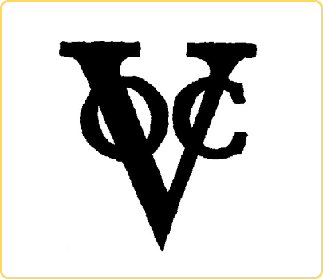
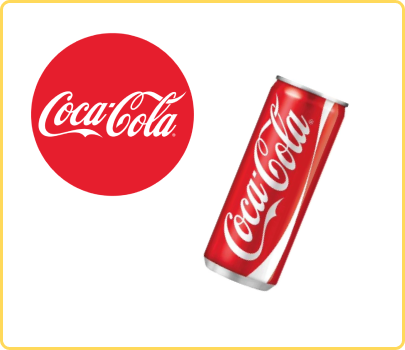
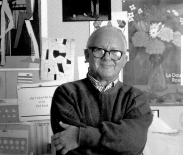
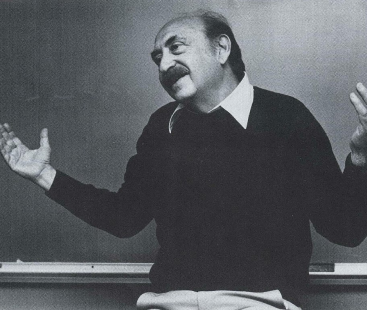

Sejarah Logo & Brand
Bagaimana sih sejarah singkat dari Logo dan Brand? Yuk Pelajarin!

Logo adalah salah satu produk budaya yang kehadirannya tidak terlepas dari pengaruh revolusi lambang, simbol dan fenomena dalam bidang desain, branding dan teknologi.

Asal mula istilah brand dari Brinan di jerman kuno tahun 750-1050 dengan berarti sebuah kayu yang dibakar untuk menandai hewan ternak.
Di Inggris kuno tahun 500 disebut
Byrnan dan Biernan kemudian menjadi Birnan dan Bround, dari bahasa Inggris pertengahan tahun 1066-1500 sedangkan orang-orang Norse/Viking (nenek moyang) orang Skandinavia tahun 900-1300 menyebut brand dengan Brandr.

Lahir Manejemen Brand Pertama di tahun 1931 yang dibuat oleh Neil Hosler McElroy manajer periklanan Precter & Gamble (P&G). Memperkenalkan Brand Differentiation: setiap produk atau brand dari satu perusahaan yang sama harus dibedakan target marketnya maupun tim marketingnya, serta identitasnya agar tidak saling bersaing.

VOC (Vereenigde Oostindische Compagnie)merupakan perusahaan dagang belanda yang menguasai Asia Timur dan berpusat di Batavia tahun 1619. Para ahli percaya bahwa VOC merupakan perusahaan multinasional pertama dan logo VOC sebagai logo perusahaan pertama di dunia.

Logo Coca-cola merupakan salah satu identitas visual yang legendaris, dari bentuknya yang tidak banyak berubah dari sejak tahun 1886 sampai sekarang.
Berikut beberapa desainer logo di Amerika Serikat yang terkenal di era 1950-1960 :

PAUL RAND (1914-1996)
Merupakan desainer logo IBM; UPS, ABC, Enron, NeXT, dll. Gayanya dipengaruhi oleh Swiss Style.
